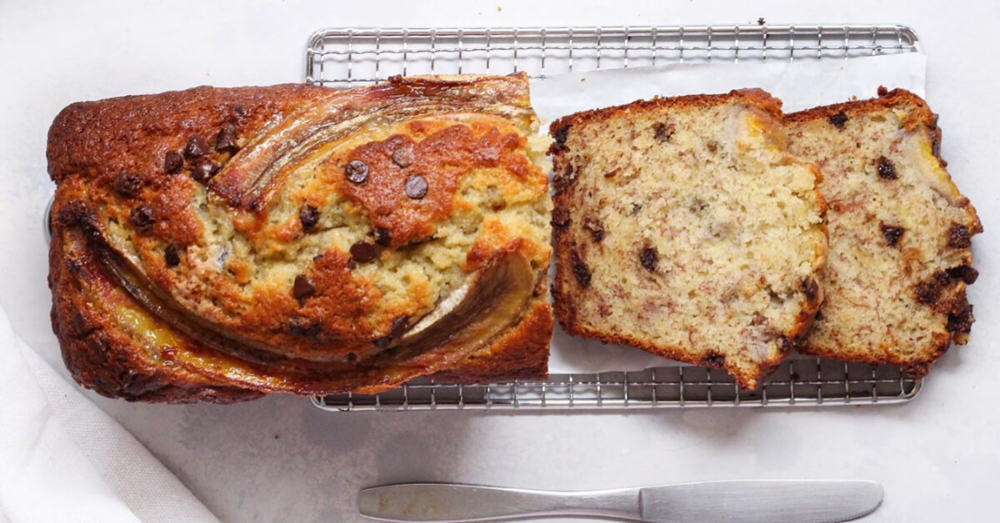
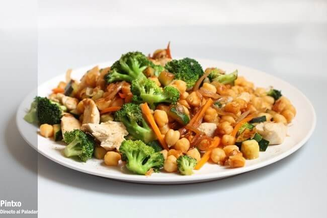
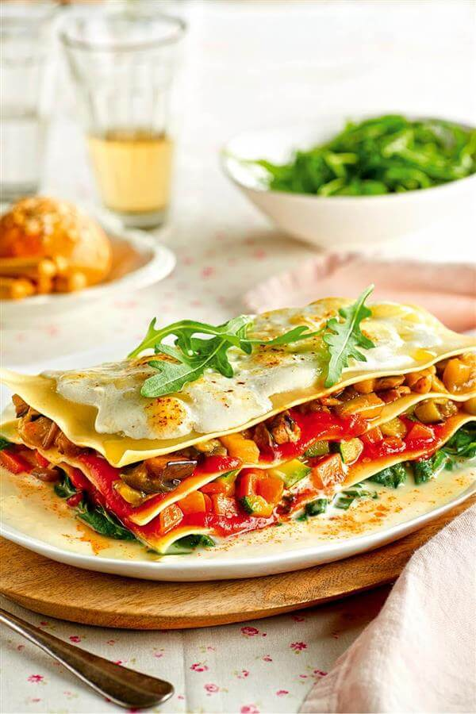

Recetas faciles y rapidas
Compartimos un par de recetas saludables y faciles de hacer para cuando no sabes que cocinar
Desayuno: Budin de banana y arandanos
INGREDIENTES 2 BANANAS UN PUÑADO DE ARÁNDANOS 100 G AVENA 50 G ALMENDRAS PICADAS (O HARINA DE ALMENDRAS) 15 G POLVO DE HORNEAR 2 HUEVOS 20 ML ACEITE 75 G MIEL 1 CDITA. DE ESENCIA DE VAINILLA ARMADO En un bol mezclar los ingredientes secos (avena, almendras picadas y polvo de hornear) Aparte, pisar las bananas. Agregarle los huevos, el aceite, la miel y la esencia de vainilla. Integrar todo y agregar una parte de los arándanos. Mezclar bien y verter en una budinera cubierta de papel aluminio. Decorar con el resto de los arándanos y llevar a horno medio por unos 50 minutos.
Almuerzo: Salteado de garbanzos pollo y verduras
Ingredientes Para 4 personas Garbanzos cocidos 200 g Pechuga de pollo 200 g Brócoli pequeño 1 Calabacín pequeño 1 Zanahoria 1 Cebolla 1 Dientes de ajo 1 Aceite de oliva virgen extra Sal Pimienta negra Empezamos con el pollo. Lo cortamos en tiras (sin piel ni huesos) y lo ponemos a macerar con un diente de ajo picado y un par de cucharadas de aceite. Mientras preparamos las verduras. La zanahoria la limpiamos, "pelamos" y cortamos en bastones finos, el brócoli lo separamos en arbolitos y el calabacín lo limpiamos y cortamos con piel en dados, además la cebolla la pelamos y cortaremos en juliana. En una sartén salteamos el pollo hasta dorarlo, lo reservamos. Añadimos en la misma sartén la cebolla, dos minutos después el resto de verduras y salteamos un par de minutos más. Añadimos el pollo y los garbanzos y removemos, mezclando y salteando a la vez durante otros dos o tres minutos.
Merienda: Galletas de avena

INGREDIENTES (PARA 2 PLACAS DE HORNO) 200 G DE MANTECA 200 G DE AZÚCAR 1 HUEVO 250 G DE AVENA 50 G DE HARINA 1 CUCHARADITA DE CANELA 1 CUCHARADITA DE EXTRACTO DE VAINILLA ARMADO En un bol, mezclar la manteca a temperatura ambiente con el azúcar y el huevo. Agregar la avena y la harina. Saborizar con canela y vainilla. Con dos cucharas formar bolitas, aplastarlas y colocarlas en una placa de horno enmantecada. Hornear a horno medio entre 10-15 min. Dejar unos minutos sobre la placa, luego enfriar sobre una rejilla.
Cena: Lasaña de verduras
Nuestra versión de la lasaña de verduras tiene 200 calorías menos que la de toda la vida, pero es igual de completa. Para conseguirlo, prescindimos de la carne y la salsa y, en su lugar, ponemos solo verduras y champiñones, que son muy saciantes. Y para la bechamel, ponemos leche desnatada, además de reducir la harina y el aceite a la mínima expresión. Ingredientes para 4 personas: 1 paquete de placas de lasaña precocida 3 zanahorias 1 calabacín 1 berenjena 200 gr de champiñones 200 gr de espinacas frescas 1 cucharada de harina 200 gr de salsa de tomate 500 ml de leche desnatada 100 gr de queso rallado Aceite de oliva Sal Preparación: Precalienta el horno a 170ºC. Mientras tanto, calienta en una sartén dos cucharadas de aceite de oliva y tuesta la harina. A continuación, vierte la leche en un hilo sin dejar de mover. Sazona y cocina hasta que espese. Cuece las espinacas al vapor y mézclalas con un poco de bechamel. Pela y corta las verduras y resérvalas. Sofríe el calabacín y la zanahoria 2 minutos, incorpora la berenjena y cocina 4 minutos, añade los champiñones y déjalo cocinar durante 2 minutos más. Por último, incorpora las espinacas a las verduras. Cuece la pasta según las instrucciones del fabricante y déjala escurrir en un paño de algodón. Monta la lasaña alternando capas de pasta con verdura y salsa de tomate. Cubre con la bechamel restante, espolvorea con el queso rallado y hornea la lasaña durante 20 minutos.